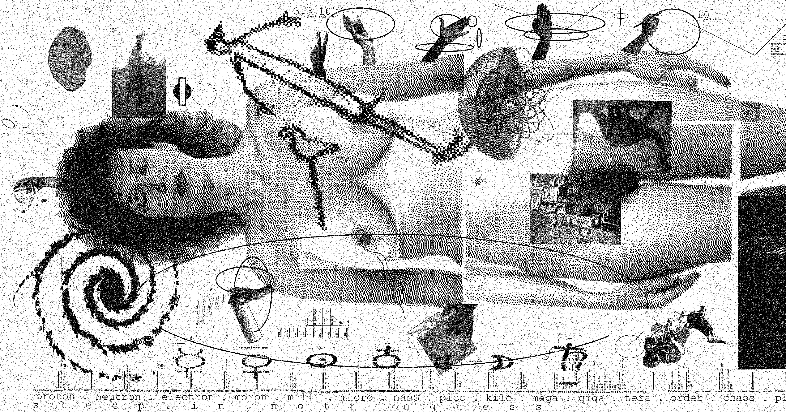

Novas Cartas Portuguesas, Maria Isabel Barreno, Maria Teresa
Horta e Maria Velho da Costa, 1974
"Chegou a hora de dizer basta. E formarmos um bloco com os nossos corpos"

The Second Sex [O Segundo Sexo], Simone de Beauvoir, 1949

Happening [O Acontecimento], Annie Ernaux, 2000

Baseline Shift, Briar Levit, 2021
"Mulheres anónimas que recorreram ao design para provocar mudança, fazer negócios e sustentarem-se"
Flowers
[Flores]
Endless Summer Vacation [Férias de Verão Sem Fim], Miley Cyrus, 2023

Feia
Feia, Carolina Deslandes, 2025
“QUERIDA, DEVIAS ASSENTAR E CASAR-te COM UM HOMEM RICO"
“MÃE, EU SOU UM HOMEM RICO”
Cher, 1996
Does it make sense? [Isso faz sentido?],
April Greiman, 1986

For All Womankind [Para Todo o Tipo de Mulheres], Deva Pardue, 2017
We Can Do It!
[Nós Conseguimos!],
Rosie the Riveter, 1943
Too Young to Wed [Demasiado Jovem para Casar], Stephanie Sinclair, 2011
Your body is a battleground
[O teu corpo é um campo de batalha], Barbara Kruger, 1989

The Most Evil Enemy of Women [O pior inimigo das mulheres], Nina Vatolina, 1941
Cleaning the Drapes [Limpar as Cortinas],
Martha Rosler, 1967-1972